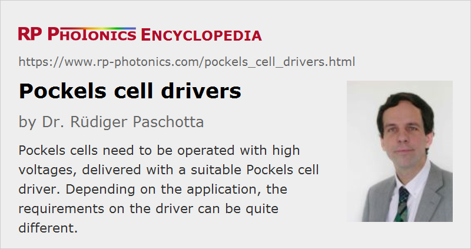

Pockels Cell Drivers
Definition: electronic devices for driving Pockels cells
German: Treiber für Pockels-Zellen
How to cite the article; suggest additional literature
Author: Dr. Rüdiger Paschotta
Pockels cells are used in various kinds of electro-optic modulators, which are controlled by applying an electrical voltage. That voltage is supplied by some kind of Pockels cell driver connected to the two electrodes of the Pockels cell.
Typical applications of Pockels cells in the area of laser technology are:
- active Q switching, mostly of solid-state lasers
- active mode locking
- cavity dumping of continuous-wave or mode-locked lasers
- regenerative amplifiers for ultrashort pulses
- pulse pickers for ultrashort pulses (e.g. for reducing the pulse repetition rate)
- modulating laser beams, e.g. in a sinusoidal fashion in the context of stabilization of lasers
The requirements on the electronic driver can be very different depending on the application; see below for more details.
Nowadays, basically all Pockels cell drivers are made based on solid-state electronic technology, using high voltage transistors such as MOSFETs. Multiple high voltage transistors may have to be stacked, taking care to achieve an even distribution of voltage across those. Instead of using some heavily isolated floating gate drive circuitry for the different transistors, one may use certain advanced ideas such as implementing so-called avalanche switch stacks involving avalanche diodes (not meaning avalanche photodiodes) and/or avalanche bipolar transistors.
Device lifetimes can be very long, provided that properly engineered drivers are used with appropriate care. On the other hand, drivers can be destroyed very quickly when used inappropriately.
Required Voltages
The required voltage is typically of substantial magnitude. Frequently, one needs to access the full transmission range of an intensity modulator based on a Pockels cell, or alternatively a large range of phase delays of a phase modulator, and therefore requires control voltages of the order of the so-called half-wave voltage. That voltage is often hundreds of volts or even several kilovolts, particularly for large aperture Pockels cells. In some cases, however, substantially smaller drive voltages are sufficient.
It can be sensible to select a Pockels cell with relatively small half-wave voltage, for example by using an electro-optic material with high electro-optic coefficient and/or by working with a relatively small aperture size in case of a cell with transverse electrodes. For longitudinal Pockels cell designs, the average size does not influence the required control voltage, only the electrical capacitance.
Of course, appropriate safety measures have to be taken in order to avoid electric shocks; see below the paragraph on safety.
Speed or Bandwidth Requirements
For some applications, it is required to rapidly switch the transmission of an intensity modulator, e.g. between about 0 and 100 %. That is often achieved by quickly discharging the output with a fast transistor-based switch. It is important to realize that a Pockels cell constitutes a capacitive load, and that different cells exhibit very different capacitance values. While no significant electric current is required to hold a certain voltage at a Pockels cell, a substantial current spike needs to be supplied by the driver to rapidly change that voltage. For example, consider a Pockels cell with only 10 pF capacitance and a switching voltage of 1 kV: we need 10 nJ of electric charge to be moved e.g. within 10 ns, which implies a current spike of the order of 1 A – quite a lot for a high-voltage supply. Even the average currents can become substantial when operating such devices at high repetition rates of hundreds of kilohertz or even several megahertz.
Both an excessive capacitance of the Pockels cell and a too modest current pulse capability of the driver can lead to a limited switching speed. This can be problematic, for example when Q switching or cavity dumping a laser, where serious performance degradations can result. Note, however, that the laser design and operation parameters also have a profound influence on the requirements concerning switching speed.
For fast switching (e.g. with fall times of a few nanoseconds), one also needs to take into account the inductance of the electrical connections, e.g. avoiding excessively long cables.
Some drivers are optimized for very fast switching in one direction, while the switching speed is much lower in the other direction, which may be irrelevant for the application. For example, power losses in a Q-switched laser need to be reduced rapidly for generating a pulse, while the recovery of the introduced losses can be much slower without causing problems. In other cases, fast switching is required in both directions, and suitable drivers have been developed, for example using a push–pull circuit topology.
In the frequency domain, the speed of a driver – or more precisely, of the combination of a Pockels cell and its driver and the cable in between – is quantified in the form of a bandwidth. The shortest possible switching time is of the order of the inverse bandwidth.
Precision
For some applications, it is vital to control the voltage at a Pockels cell with high precision. For example, a pulse picker should well transmit the selected pulses while ideally blocking all other pulses completely. Partially transmitting additional pulses, even at a rather low level, may severely compromise a system performance. Imperfections of that kind can be introduced by inaccurate electronics, but in some cases also by certain deficits of Pockels cells, such as thermal effects and nonlinear optical effects.
Special Requirements
Simple Pockels cell drivers simply accept an analog input signal of moderate voltage, amplify it proportionally and send it to the cell. There may be a control knob for adjusting the amplification, e.g. such that one can precisely switch between zero and 100% transmission of a modulator.
Other drivers have a digital trigger input; that can be appropriate e.g. for operating Q-switched lasers. There may be an adjustable time delay between the input trigger and the applied output voltage. For example, there are devices which can receive a trigger signal when a flashlamp-pump laser is pumped, so that a Q-switched pulse is generated e.g. 200 μs later.
Most devices are simply attached to the electrical power grid (e.g. at 110 V or 230 V), while others are operated with a DC voltage of moderate magnitude, for example 24 V.
Some drivers (unipolar ones) have one of their two output pins at ground potential. Others have a bipolar balanced output, where the two outputs have opposite voltages against ground potential. The voltage against ground can be lower that way, which may be advantageous in terms of safety. Of course, suitable cables and connectors are required for that kind of operation, and not every Pockels cell can be connected to such a driver, as both electrodes need to be isolated against electrical ground.
Some drivers have their own housing with connectors, controls, a voltage display, etc., while others are available in OEM versions for being integrated into other devices.
For the operation of a regenerative amplifier, one needs to trigger a Pockels cell quite precisely based on a signal from a first photodiode. The required electronics may also be integrated into a Pockels cell driver. Otherwise, clearly defined interfaces are required to connect such devices successfully.
A very small timing jitter of the driver is often essential for the applications in regenerative amplifiers and for cavity dumping, while for a simple Q-switched laser it may not matter much.
Safety Considerations
As Pockels cell drivers usually produce dangerously high electrical voltages, they need to be used with care. This begins with a suitable connection to their power source. Usually, drivers are connected to the public grid, and it is particularly important for those that their AC input connection is properly grounded with suitable intact cables.
As mentioned above, devices with a balanced bipolar output are somewhat less dangerous in the sense that they exhibit lower voltages against ground.
It is essential to use proper cabling with sufficient insulation for high voltages. The used cables should be regularly inspected for damages particularly to the insulation, as can easily occur in a laboratory or industrial environment, for example. The quality of electrical connectors is also vital. Regular inspections are required by law in many countries.
Certainly, the user manual of the device should be carefully read before starting operations, and the device should be turned on only when being sure that all electrical connections are correctly made.
High-voltage drivers can often not tolerate short circuits – they can be quickly damaged e.g. when an output pin is connected to electrical ground.
Suppliers
The RP Photonics Buyer's Guide contains 18 suppliers for Pockels cell drivers. Among them:
Questions and Comments from Users
Here you can submit questions and comments. As far as they get accepted by the author, they will appear above this paragraph together with the author’s answer. The author will decide on acceptance based on certain criteria. Essentially, the issue must be of sufficiently broad interest.
Please do not enter personal data here; we would otherwise delete it soon. (See also our privacy declaration.) If you wish to receive personal feedback or consultancy from the author, please contact him e.g. via e-mail.
By submitting the information, you give your consent to the potential publication of your inputs on our website according to our rules. (If you later retract your consent, we will delete those inputs.) As your inputs are first reviewed by the author, they may be published with some delay.
See also: Pockels cells, electro-optic modulators
and other articles in the category photonic devices
|  |
If you like this page, please share the link with your friends and colleagues, e.g. via social media:
These sharing buttons are implemented in a privacy-friendly way!